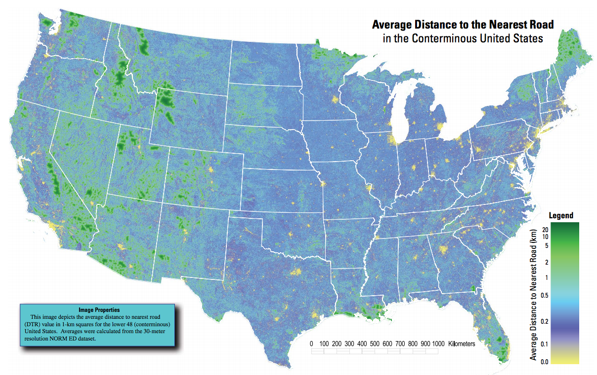

Camping Research
Consider the USGS "heat-map" of distance to the nearest road (official pdf available here):

By eye, the biggest, darkest green spots are:
- Yellowstone Complex (northwest WY) -- the largest blob (1.8M acres) comprises SE Yellowstone plus the Teton and Washakie Wildernesses. The nearly-contiguous area includes Grand Teton Park and the North Absaroka, Absaroka-Beartooth, and Jedediah Smith Wildernesses.
- Bob Marshall Complex (northwest MT) -- the huge blob (1.5M acres) comprises the Great Bear, Bob Marshall, and Scapegoat wildernesses. Just north is Glacier Park (1M acres), which is largely roadless apart from two east-west roads.
- Frank Church & Selway Bitterroot (ID) -- the largest blob comprises the Frank Church and Gospel Hump Wildernesses, which officially cover ~2.5M acres, but are surrounded by another 800k acres of roadless sections of National Forest . The northen blob is the 1.3M acre Selway Bitterroot wilderness, separated from the Frank Church by a one-lane dirt road called the Magruder corridor.
- The Sierra Crest (CA) -- this long and skinny wilderness comprises 14 individually named sections covering a 2.5M acre southern region and 600k acree north region, which are separated by a single road in Yosemite (Tioga road) that is open from May through October.
- Olympic Park (WA) -- most of the 900k acre park is wilderness.
The next two biggest spots (by eye) are in Utah and Nevada and are not suitable for camping. The large blobs are military facilities (Wendover, Dugway, and Desert Test Center in UT; Nellis and nearby ranges in NV), and the nearby UT areas are salt desert or salt lake.
Acreages are approximate. Roadless areas may be significantly larger than the wilderness proper if they happen to have no roads.
Here is a good commentary and subjective ranking of large wilderness areas.